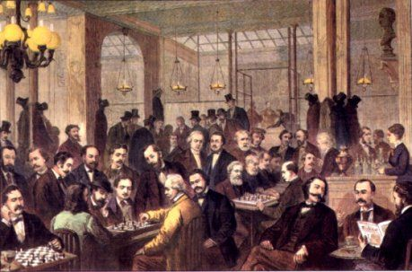

Welcome to the fascinating world of Chess! Discover its history, the origins of the game, and how it evolved into what we know today.
During a short intermission on Live Chess, I decided to join in the general conversation. When I was about to start another game someone had posted, "where did chess come from?" I tend to see a lot of these random statements. Others include-
And other various questions. (You get the point :p)
So, for all the nubsters out there, this article is for you.
Today we know that chess originated from the Gupta Empire (600CE), of India. However many people firmly believe that chess was played by the ancient Egyptians. But, the game we think of as chess and what the Egyptians used to play are completely different. Simply put, the Egyptians played something different that resembled chess. Despite this, we really don't know who first came up with the game, but it can be traced officially back to India.
The pieces come from the primary military elements of that time: the infantry, the elephants, the cavalry and the chariots.
Global trade eventually brought the game to Europe and around 1200CE the game undertook dramatic changes to become what it is today. In Italy and Spain, such changes gave their pawns the ability to move two squares on the first move, bishops their dominance over diagonals and queens their ability to move anywhere.
During the 18th century, the center of the chess world switched to western Europe to areas like France. Matches were played in large coffee houses in large cities such as London and Paris. It wasn't until the 19th century that chess became widely known.
"Cafe de la Regence" in Paris during the 19th century.
The first chess tournament was held in London (1851). The winner was a German by the name of Adolf Anderssen. Adolf Anderssen was also the winner of the "Immortal Game".